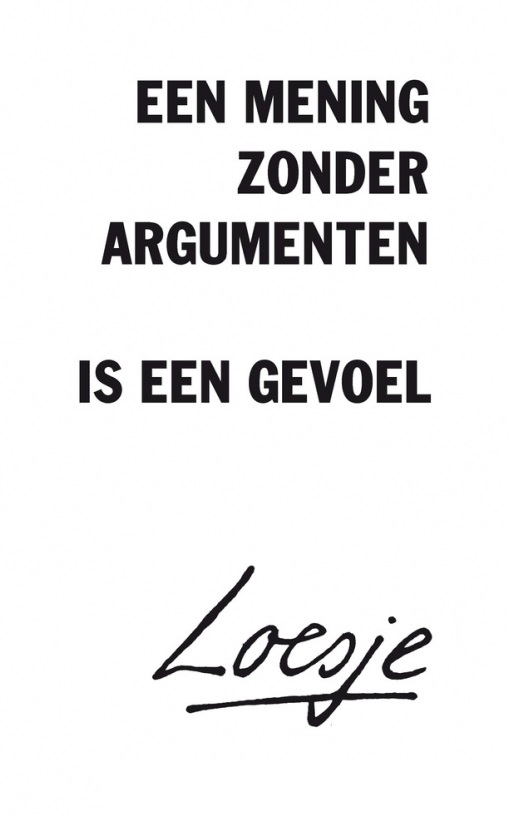

Argumenteren
Wanneer er verschillen zijn in een standpunt kan er een overeenstemming worden bereikt middels een argumentatieve discussie. Hierbij worden argumenten aangevoerd welke de verschillende standpunten onderbouwen. Als reactie hierop worden tegenargumenten met op hun beurt weer weerleggingen gegeven. Het denken vanuit beide kanten en beide perspectieven, is de drijfveer voor democratie en de basis van wetenschap. Tevens leidt het tot inzicht en nuancering. In dit bestand is de theorie van het argumenteren beknopt uitgelegd met daarbij een praktijkvoorbeeld.
